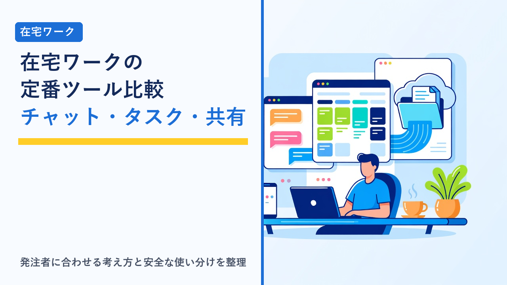

在宅ワークで使う定番ツール比較：チャット・タスク管理・ファイル共有の選び方
2026-09-28 更新

在宅ワークでは、発注者と顔を合わせずに仕事を進めるため、連絡・進行管理・納品物の受け渡しをすべてオンラインのツールで行います。使うツールは「チャット」「タスク管理」「ファイル共有」の3種類に大きく分けられ、それぞれに定番のサービスがあります。どれも無料プランから始められるものが多い一方で、機能や保存できる範囲に差があり、複数の取引先と仕事をするようになると管理の仕方にも工夫が必要になります。この記事では、在宅ワークでよく使われるツールを種類別に整理し、発注者側の指定に合わせる考え方、複数案件を持つときの使い分け、共有リンクやアカウント管理などの安全面の注意点を客観的にまとめます。
在宅ワークで必要になるツールの3分類
ツールを選ぶ前に、それぞれの役割を整理しておくと、「何のために」「どれを」使うかが判断しやすくなります。
チャットツール
日常のやり取り、質問、確認、進捗報告に使います。メールより短いテンポで会話でき、案件やプロジェクトごとにチャンネル（部屋）を分けられるのが特徴です。発注者側の指定に従うことがほとんどで、受注者が選ぶ場面は少ないツールです。
タスク管理ツール
「何を・いつまでに・誰が」やるかを一覧にして進行を追うために使います。発注者側のプロジェクト管理に招待される場合と、自分の案件全体を管理するために個人で使う場合の2通りがあります。
ファイル共有サービス
納品物や資料の受け渡し、共同編集に使います。チャットの添付で済む規模から、フォルダ単位で継続的に共有する規模まで幅があります。共有リンクの権限設定が安全面で最も重要になるツールです。
前提：ツール選びは「発注者の指定に合わせる」が基本
在宅ワークのツールは、受注者が自由に選べるものと、発注者の環境に合わせるものに分かれます。チャットとタスク管理は発注者の指定に合わせることが一般的で、複数の取引先を持つと、それぞれ別のツールを使うことになります。一方、自分の作業を整理するための個人用タスク管理や、納品物のバックアップとして使うファイル保管は、受注者が自分で選べる部分です。
クラウドソーシングを通じた案件では、サイト内のメッセージ機能とファイル添付機能でやり取りが完結することが多く、外部ツールを使う場合でも、契約内容の確認や検収はサイト上で行うルールになっているサービスが一般的です。サイトを介さない直接のやり取りに誘導された場合は、規約違反やトラブル時の保護が受けられない可能性があるため注意が必要です。契約時に確認しておきたい基本事項は在宅ワークで注意したいこと（契約・報酬・確定申告の基礎知識まとめ）で整理しています。
チャットツールの比較
在宅ワークの現場で使われることが多いチャットツールを、特徴と使われやすい場面で整理します。無料プランでは過去のメッセージを閲覧できる範囲や、参加できる外部メンバーの数に制限があるサービスが多いため、履歴を残しておきたいやり取り（金額や納期の合意など）はメールや契約書面でも確認しておくのが安全です。
| ツール | 特徴 | 使われやすい場面 | 受注者側の注意点 |
|---|---|---|---|
| Slack | チャンネル単位の会話、スレッド、外部連携が豊富。IT・Web系企業で普及 | Web制作、開発、スタートアップ系の案件 | 無料プランでは閲覧できる履歴に期間の制限がある。複数の発注者の「ワークスペース」を1つのアプリで切り替える |
| Chatwork | 国内企業向けに設計されたビジネスチャット。タスク機能を内蔵 | 中小企業、士業、事務系の案件 | 無料プランではグループチャットの数や履歴に制限がある。メッセージにタスクを紐づけて依頼を受けることが多い |
| Microsoft Teams | Officeアプリとの連携が強く、会議機能も一体 | 大企業や官公庁系、Officeを中心に使う組織の案件 | 発注者の組織に「ゲスト」として招待される形が多く、アカウントの切り替えに慣れが必要 |
| Discord | 音声通話・画面共有が手軽。コミュニティ運営で普及 | ゲーム制作、クリエイター系、コミュニティ系の案件 | ビジネス用途を前提にした管理機能は限定的。個人アカウントと仕事用の区別を意識する |
| LINE・メール | 誰でも使える。特別な準備が不要 | 個人事業主や小規模な発注者との単発案件 | 私用連絡と混ざりやすい。仕事の合意事項はメールなど記録が残る手段で残しておく |
上記は一般的な傾向であり、各サービスの無料プランの範囲や機能は変更されることがあります。実際に使う前に、各サービスの公式サイトで最新の条件をご確認ください。
タスク管理ツールの比較
タスク管理ツールは、管理の「形式」で選ぶと違いがわかりやすくなります。主な形式は、カードを列で動かすカンバン型、チェックリストを中心にしたリスト型、文書やデータベースと一体で管理するドキュメント型の3つです。
| ツール | 形式 | 特徴 | 向いている使い方 |
|---|---|---|---|
| Trello | カンバン型 | 「未着手→作業中→完了」のようにカードを動かして進行を見る。直感的で導入しやすい | 制作物の進行管理、複数案件の状態を一目で見たい人 |
| Asana | リスト型＋カンバン型 | プロジェクトごとにタスクを整理し、担当者・期限・依存関係を管理。チーム向けの機能が豊富 | 発注者側のプロジェクトに招待されて使うケース |
| Notion | ドキュメント型 | メモ・データベース・タスク一覧を1つのページ体系で扱える。自由度が高い | 案件情報・マニュアル・タスクをまとめて管理したい人 |
| Todoist | リスト型 | 個人のToDo管理に特化。繰り返しタスクや優先度の設定がしやすい | 自分の1日の作業を整理する個人用途 |
| Googleスプレッドシート | 表形式 | 専用ツールではないが、共有・並べ替え・集計が自由にできる | 発注者と進行表を共有する簡易的な用途、案件や請求の一覧管理 |
発注者から招待されるタスク管理ツールは案件ごとに異なるため、自分用に「全案件を横断して見る」場所を1つ持っておくと、複数の取引先の締め切りを見落としにくくなります。専用ツールでもスプレッドシートでも構いませんが、締め切り・作業時間の見込み・納品状況を1か所に書くことが重要です。受けすぎを防ぐための考え方は在宅ワークで消耗しないための時間管理：案件の受けすぎを防ぐ目安と断り方で整理しています。
ファイル共有サービスの比較
ファイル共有は、「一時的に渡す」のか「継続的に共有する」のかで適したサービスが変わります。無料で使える容量と、共有リンクに設定できる権限の細かさが比較のポイントです。
| サービス | 無料プランの容量の目安 | 特徴 | 向いている場面 |
|---|---|---|---|
| Google ドライブ | 15GB（Gmail・フォトと共用） | ドキュメント・スプレッドシートの共同編集と一体。閲覧者・コメント可・編集者の権限設定ができる | 資料の共同編集、フォルダ単位での継続的な共有 |
| Dropbox | 2GB | パソコンのフォルダと同期する使い方が中心。ファイルの復元や共有リンクの管理機能がある | デザイン・動画などサイズの大きい制作物の受け渡し |
| OneDrive | 5GB | Windows・Officeとの連携が強い。Teamsを使う組織で使われることが多い | Office文書中心の案件、Teamsと組み合わせる場合 |
| ファイル転送サービス | サービスにより異なる（保存期間に期限あり） | アカウント登録なしで大容量ファイルを一時的に渡せる。一定期間で自動削除される | 単発の大容量納品。継続的な保管には不向き |
容量や機能は執筆時点（2026年9月）の一般的な情報です。プランの内容は変更されることがあるため、各サービスの公式サイトで最新情報をご確認ください。
納品物は、発注者に渡した後も自分の手元に控えを残しておくことが大切です。修正依頼や再納品、実績として提示する場面で必要になります。クラウドの共有フォルダは発注者側の設定で削除されることもあるため、自分のストレージやパソコンにも保管しておくと安心です。
複数の取引先を持つときの使い分けと整理
在宅ワークを続けていくと、発注者ごとに違うチャット・タスク管理・ファイル共有を使うのが当たり前になります。混乱を防ぐための一般的な整理方法をまとめます。
- 仕事用のアカウント・メールアドレスを分ける：私用と分けておくと、通知の混在や誤送信を防ぎやすくなります。屋号や氏名を使ったアドレスにすると発注者側も識別しやすくなります。
- 通知は「案件別」に設定する：すべての通知をオンにすると集中が途切れます。締め切りに関わるものだけを通知し、それ以外は決まった時間にまとめて確認する形が一般的です。
- ローカルのフォルダ構成を取引先別に統一する：「取引先／案件名／納品日」のように同じルールで並べておくと、共有先がどのサービスでも手元の管理は一定になります。
- 合意事項は記録が残る場所に：チャットの無料プランでは履歴が見られなくなることがあります。金額・納期・修正回数などの合意はメールや契約書面でも残しておきます。
- 案件終了後は共有を解除・確認する：終了した案件のワークスペースや共有フォルダに機密資料が残っていないか確認し、必要に応じて退出・削除します。
作業環境そのもの（机・椅子・ネット回線）の優先順位は在宅ワークの作業環境づくり：机・椅子・ネット回線で優先度が高いのはどれで整理しています。
安全面で押さえておきたい注意点
ツールを使う上で、在宅ワーカー個人に求められる安全対策は共通しています。発注者から秘密保持契約（NDA）を求められることも多いため、「情報を漏らさない仕組み」を自分の側で持っておくことが信頼につながります。
- 共有リンクの権限を最小にする：「リンクを知っている全員が編集可」ではなく、相手を指定した共有か、閲覧のみの権限にします。不要になったリンクは無効化します。
- 二段階認証（多要素認証）を有効にする：チャットもストレージも、パスワードだけに頼らない設定が基本です。発注者の情報を扱う以上、アカウントの乗っ取り対策は必須といえます。
- パスワードはツールごとに分ける：使い回しを避けるため、パスワード管理ツールを利用する方法が一般的です。
- 公衆Wi-Fiでの作業に注意する：カフェなどのネットワークで機密資料を扱うときは、通信の安全性を確保する必要があります。詳しくは公衆Wi-Fiは安全？カフェ・ホテルで動画を見る前に知っておきたい通信の話で整理しています。
- 発注者から預かったデータは契約に従って扱う：案件終了後の削除や返却が契約で定められている場合は、それに従います。個人情報を含むデータは特に慎重に扱います。
クラウドソーシングなら、まずはサイト内の機能で十分な段階も
在宅ワークを始めたばかりの段階では、外部ツールを揃える前に、クラウドソーシングサイトのメッセージ機能・ファイル添付・納品検収の仕組みだけで進められる案件から経験を積む方法があります。契約や支払いがサイト上で管理されるため、ツールの使い分けに慣れていなくても、やり取りの記録や納品の証拠が自然と残ります。慣れてきた段階で、発注者から指定されたチャットやタスク管理ツールに参加する形に移行していくのが一般的な流れです。
初心者が最初に取り組む案件の選び方はスキマ時間の在宅ワーク、初心者が最初にやるべきことまとめで整理しています。
発注する側の視点：業務を外部に任せるときのツール環境
ここまで受注者の視点で整理してきましたが、事業者が事務作業などを在宅のアシスタントに任せる場合も、同じツール群が土台になります。オンラインアシスタントサービスでは、チャットツールでの日常連絡、タスク管理ツールでの依頼と進捗確認、クラウドストレージでの資料共有という形で業務が進むのが一般的で、発注側がすでに使っているツールに合わせて運用してもらえるかどうかが導入時の確認ポイントになります。どのような事業者に向いているかはフジ子さんのようなオンラインアシスタントサービスが向いている事業者の特徴で整理しています。
選び方のポイント
- チャット・タスク管理は発注者の指定に合わせる：受注者側で選ぶ場面は少ないため、主要なツールの基本操作をひととおり知っておくことのほうが役立ちます。
- 自分用の「全案件を横断する管理場所」を1つ持つ：ツールは何でもよく、締め切り・作業見込み・納品状況を1か所に書くことが目的です。
- ファイル共有は権限設定の細かさで選ぶ：継続的な共有はフォルダ単位で権限管理できるストレージ、単発の大容量納品は転送サービスという使い分けが一般的です。
- 無料プランの制限を把握しておく：履歴の閲覧期間や容量の上限は仕事の記録に影響します。合意事項は別の手段でも残します。
- 仕事用アカウントと二段階認証を基本にする：私用との分離と認証強化は、どのツールを使う場合でも共通の土台です。
- 始めたばかりならサイト内機能から：クラウドソーシングのメッセージ・納品機能で完結する案件から慣れていく方法もあります。
よくある質問
発注者ごとに違うチャットツールを指定されます。すべてインストールする必要がありますか？
基本的には発注者の指定に合わせる必要があります。主要なチャットツールはパソコン用アプリのほかブラウザからも利用できるものが多いため、使用頻度の低いものはブラウザで開く形にすると管理しやすくなります。通知はすべてオンにせず、締め切りに関わる案件だけを優先する設定にしておくと、集中を保ちやすくなります。なお、クラウドソーシングを介した案件では、契約や検収はサイト上で行うルールになっていることが多いため、外部ツールへ完全に移行するよう求められた場合は規約を確認してください。
納品物はチャットに添付するだけで問題ありませんか？
小さなファイルの単発納品であれば、チャットやサイトの添付機能で済むことが多いです。ただし、チャットの無料プランでは過去の添付ファイルが閲覧できなくなる場合があり、発注者側も後から探しにくくなります。継続的な取引ではクラウドストレージの共有フォルダを使い、納品後も自分の手元に控えを残しておくのが一般的です。納品の形式や方法は契約時に確認しておくと、やり直しを防げます。
無料プランのままで仕事を続けても支障はありませんか？
受注者側が発注者のワークスペースに招待される形であれば、料金は発注者側のプランで決まるため、受注者が有料プランに入る必要はないのが一般的です。自分用に使うタスク管理やストレージは、案件の数や納品物のサイズが増えて無料枠を超えた時点で、有料化を検討する形で十分です。有料化する場合はその費用が経費になるため、記帳の対象として管理します。経費や記帳の考え方は在宅ワーカーが使いたい確定申告ツール・記帳アプリの選び方で整理しています。